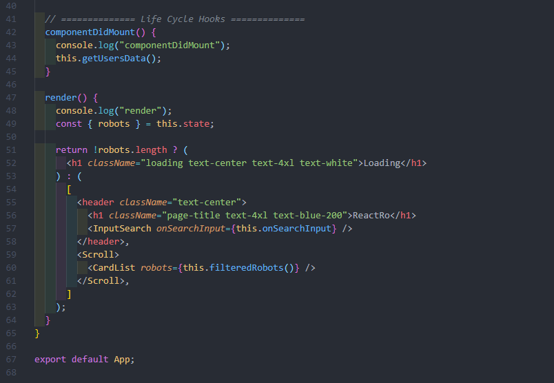

React mixes the wonderful things of OOP and FP and before we start discussing about that, lets take a look on the mindset to start developing the react project.
React Development Idea
The idea behind React
- Declarative
- One way data flow
- Component based development
- State driven development
- Life Cycle Hooks
As we can see, we have 5 main points of the mindset, and they are actually relating with each other.
1. Declarative
- With imperative, we used to manipulate the DOM by telling the DOM what to do directly, it makes the data flows, unpredictable and hard to manage.
Also changing the DOM forces the DOM to do multiple things, it causes performance problems.
- With declarative, we only need to describe what the page should look like by modifying the state without touching the DOM.
Based on the state (blueprint) we provide, the react bot will handle the changes.
2. One way data flow

One way data flow indicates that in react, the influence of components are from top to bottom. It means that only the children of the parent component will notice the changes. Which is cool.
3. Component based development

Building website like lego blocks
As we have talked about in the intro page, react depends on components. We use components to build up molecules then organisms, and then templates and pages.
- It makes everything becomes scalable, managable and reusable.
- Components are often written in pure function. So that the code will become predictable as well.
Components (Atoms) -> Molecules -> Organisms -> Templates -> Pages
4. State driven development
The state obj is stored in a class (not a component), and by manipulating the state, we change the input of the components (pure function) and generate different result.
5. Life Cycle Hooks

React provides a way for us to manage and play with state. And according to the life cycle stage we are at, we can trigger different operations to manipulate the state.
Conclusion - React Work Flow
Combining the above 5 ideas, we can now visualize the Declarative React Work Flow.
1. State of the application + Components = Virtual DOM
2. React bot manipulates the DOM according to the Virtual DOM.